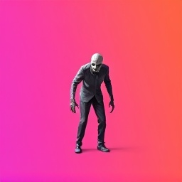
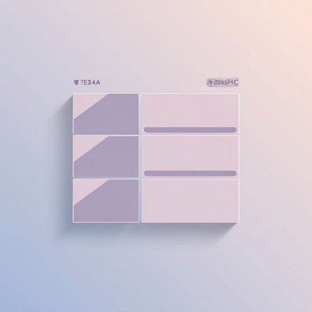
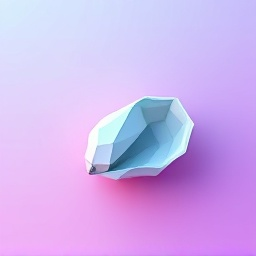
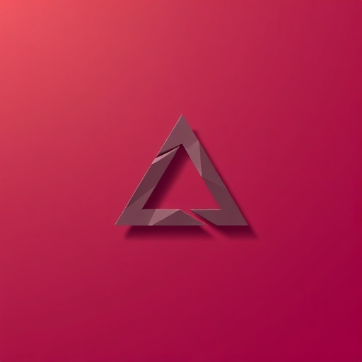
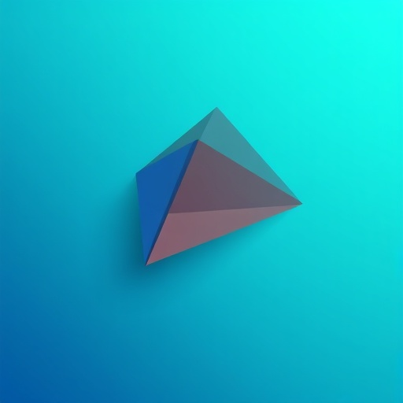

The World's your Oyster.
A prompt-controlled workspace for your files, projects, and artefacts. Open the right thing, switch context, and organise work from one chat bar.

A prompt-controlled workspace for your files, projects, and artefacts. Open the right thing, switch context, and organise work from one chat bar.
Type what you're looking for and Oyster finds it. No folders, no tabs, no hunting. The right artefact opens instantly.
Jump between project spaces with a single shortcut. Your brain switches context — your workspace should keep up.
Docs, apps, diagrams, decks, and spreadsheets live together on a visual desktop. Everything is visible, searchable, and launchable.





Oyster doesn't just answer questions. It opens artefacts, switches spaces, creates documents, and manages your workspace from the prompt bar.
Point Oyster at any folder or project and it picks up what's inside — documents, presentations, diagrams, tools, apps. Your existing work lands on the surface automatically.
npx oyster